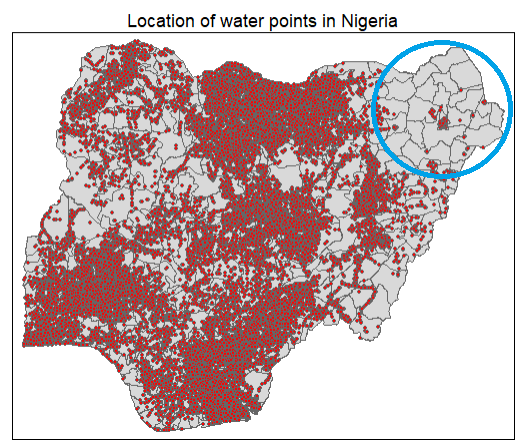

pacman::p_load(rgdal, spdep, tmap, sf,
ggpubr, GGally, cluster, factoextra, NbClust, e1071,
RColorBrewer, corrplot, psych, tidyverse, ClustGeo)Take-home Exercise 2
Updated on 17-Dec-2022
(First published on: 14-Dec-2022)
Regionalising Nigeria using non-spatial attributes of water points and geospatial features
1 Overview
1.1 Setting the Scene
The process of creating regions is called regionalisation. A regionalisation is a special kind of clustering where the objective is to group observations which are similar in their statistical attributes, but also in their spatial location. In this sense, regionalization embeds the same logic as standard clustering techniques, but also applies a series of geographical constraints. Often, these constraints relate to connectivity: two candidates can only be grouped together in the same region if there exists a path from one member to another member that never leaves the region. These paths often model the spatial relationships in the data, such as contiguity or proximity. However, connectivity does not always need to hold for all regions, and in certain contexts it makes sense to relax connectivity or to impose different types of geographic constraints.
1.2 Objectives
In this assignment, we will regionalise Nigeria by using the following measures:
Total number of functional water points
Total number of non-functional water points
Percentage of functional water points
Percentage of non-functional water points
Percentage of main water point technology (i.e. Hand Pump)
Percentage of usage capacity (i.e. < 1000, >=1000)
Percentage of rural water points
1.3 The Data
Geospatia data
For this assignment, 2 geospatial data sets will be used.
geo_export: It contains information on the water points in Nigeria. The data is available from WPdx Global Data Repositories and we are using the WPdx+ data set. The data is extracted and downloaded in shapefile format.
nga_lga2: The contains Nigeria Level-2 Administrative Boundary (also known as Local Government Area (LGA)) polygon features. The data is downloaded from The Humanitarian Data Exchange portal.
1.4 The Task
The specific tasks of this exercise are as follows:
Using appropriate sf method, import the shapefile into R and save it in a simple feature data frame format. The 3 Projected Coordinate Systems of Nigeria are: EPSG: 26391, 26392, and 26303.
Using appropriate tidyr and dplyr methods, derive the proportion of functional and non-functional water point at LGA level (i.e. ADM2).
Combining the geospatial and aspatial data frame into simple feature data frame.
Delineating water point measures regions by using conventional hierarchical clustering.
Delineating water point measures regions by using spatially constrained clustering methods.
1.5 Thematic Mapping
- Plot to show the water points measures derived by using appropriate statistical graphics and choropleth mapping technique.
1.6 Analytical Mapping
- Plot functional regions delineated by using both non-spatially constrained and spatially constrained clustering algorithms.
1.7 Overview of the Analysis Process
2 Setup
2.1 Import and load relevant packages into R environment
The R packages that we are using for this analysis are as follow:
Spatial data handling - sf, rgdal and spdep
Attribute data handling - tidyverse, especially readr, ggplot2, dplyr, e1071
Choropleth mapping - tmap
Multivariate data visualisation and analysis - corrplot, ggpubr, GGally and RColorBrewer
Cluster analysis - cluster, and ClustGeo
2.2 Import the Geospatial data sets
2.2.1 Import water point geospatial data
We import the geo_export shapefile using st_read() of sf and use filter() of dplyr to extract water point records in Nigeria.
wp = st_read(dsn = "Take-home_Ex2/geodata",
layer = "geo_export",
crs = 4326) %>%
filter(clean_coun == "Nigeria")Things to note from the code chunk above:
The original files downloaded were named as geo_export_b36a3991-6f93-4473-a5f7-8bc45e61fa6d. They were renamed to geo_export to facilitate coding.
The downloaded data file contains water point data of many countries. In this assignment, we are interested on water points in Nigeria. Hence,
filter()of dplyr is used to extract records belonging to Nigeria only.
Next, write_rds() of readr is used to save the extracted sf data table (i.e. wp) into an output file in rds data format. The output file is called wp_nga.rds and it is saved in geodata sub-folder.
write_rds(wp, "Take-home_Ex2/geodata/wp_nga.rds")2.2.2 Import Nigeria LGA boundary data
We use st_read() to import the LGA boundary data into a sf data table: nga.
nga = st_read(dsn = "Take-home_Ex2/geodata",
layer = "nga_lga2",
crs = 4326)Things to note from the code chunk above:
- The original files downloaded were named as nga_adm_osgof_20190417. They were renamed to nga_lga2 to facilitate coding.
For ease of referring to specific geographic regions (e.g. north east, south south) in Nigeria for this analysis, we will rely on following map that is available at researchgate.net.
2.2.3 Visualise the location of water points in Nigeria
We plot the locations of the water points in Nigeria to get a quick appreciation of their spread across the country
tm_shape(nga)+
tm_polygons() +
tm_shape(wp) +
tm_bubbles(col = "red",
size = 0.03) +
tm_layout(main.title = "Location of water points in Nigeria",
main.title.position = "center",
main.title.size = 1.0)
From the chart above, we notice that the north east of Nigeria have fewer water points compared to the rest of the country. In fact, we note that a handful of LGAs at the top left of the north east (circled in blue) in Bomo is devoid of any water points.
3 Data Wrangling
3.1 Group water points records by their functional status
The status_cle column in the wp_nga.rds file indicates the status of the water point when it was last assessed.
To inspect this feature, we first load wp_nga.rds in the the R environment
wp_nga = read_rds("Take-home_Ex2/geodata/wp_nga.rds")Next, we check the count of the different values in the status_cle column using a bar chart.
ggplot(data=wp_nga, aes(y=status_cle)) +
geom_bar() +
labs(title="Status of water points in Nigeria") +
geom_text(aes(label=after_stat(count)),stat = "count",hjust=-.1) +
xlim(0, 50000)In Section 1.2 Objectives, we are tasked to use measures such as the number of functional and non-functional water pumps and their proportions within the LGAs to create regions. Hence, we need to work out the number of functional, non-functional and blank value (denoted by “NA”) water points before we can derive the proportion of non-functional and functional water points.
To do so, we perform the following steps:
We use the
replace_na()method to recode all the NA values in status_cle column of the wp_nga data table into Unknownwp_nga = wp_nga %>% mutate(status_cle = replace_na(status_cle, "Unknown"))We use
filter()of dplyr to create data tables which group (1) functional, (2) non functional and (3) water points with unknown status together# Extract functional water points wpt_functional = wp_nga %>% filter(status_cle %in% c("Functional", "Functional but not in use", "Functional but needs repair")) # Extract non-functional water points wpt_nonfunctional = wp_nga %>% filter(status_cle %in% c("Abandoned/Decommissioned", "Abandoned", "Non-Functional", "Non functional due to dry season", "Non-Functional due to dry season")) # Extract water points with Unknown value wpt_unknown_status = wp_nga %>% filter(status_cle == "Unknown")
3.2 Group water point records by the technology used
We check the values available under the X_water_tec column to understand the types of technology used for water points
ggplot(data=wp_nga, aes(y=X_water_tec)) +
geom_bar() +
labs(title="Main water point technology used in Nigeria") +
geom_text(aes(label=after_stat(count)),stat = "count",hjust=-.1) +
xlim(0, 65000)From the bar chart above, we observe that Hand Pump is the main technology that is used for water points.
In addition, we note that there are 10.1k water point records where the technology used is blank. Similar to what we did for the water point status, we will replace the NA values with “Unknown” in the wp_nga dataframe.
wp_nga = wp_nga %>%
mutate(X_water_tec = replace_na(X_water_tec, "Unknown"))Thereafter, we use filter() of dplyr to create data tables for each type of water point technology. They include (1) Tapstand, (2) Hand Pump, (3) Mechanized Pump, (4) Rope and Bucket, and (5) water points with undocumented technology.
# Extract Tapstand water points
wpt_tapstand = wp_nga %>%
filter(X_water_tec =="Tapstand")
# Extract Hand Pump water points
wpt_hand_pump = wp_nga %>%
filter(X_water_tec == "Hand Pump")
# Extract Mechanised water points
wpt_mechanised = wp_nga %>%
filter(X_water_tec == "Mechanized Pump")
# Extract Rope and Bucket water points
wpt_rope_and_bucket = wp_nga %>%
filter(X_water_tec == "Rope and Bucket")
# Extract water points with Unknown technology
wpt_unknown_tech = wp_nga %>%
filter(X_water_tec == "Unknown")3.3 Group water point records by their usage capacity ( either <1000 people or >= 1000 people)
The usage_cap column in wp_nga provides the recommended maximum users per water point and this is essentially tied to the type of the water point that is deployed.
| Water Point Type | Recommended number of people |
|---|---|
| Tapstand, kiosk, rainwater catchment | 250 |
| Hand pump | 500 |
| Open hand well (rope and bucket) | 400 |
| Mechanised Well | 1000 |
We tabulate the count of water types and usage capacity using the following code:
wp_grouped <- wp_nga %>% group_by(X_water_tec,usage_cap) %>%
summarise(count = n()) %>%
st_set_geometry(NULL)
wp_groupedFrom the tabulation above, we see that most Hand Pumps have a recommended usage capacity of 300, Mechanised Pumps have a capacity of 1000 and most Tapstands have a capacity of 250.
[Note: We may need to find out the following by checking with the data source/owner:
Why there is only 1 unit of Hand Pump that has a usage capacity of 50 while the rest of the Hand Pumps have a capacity of 300
Why is it that the data shows that the usage capacity of Hand Pump is 300 while the recommended capacity is 500
Why is it that the data shows that the usage capacity of the only Rope and Bucket Well is 50 while the recommended capacity is 400
Depending on the response we receive, we may then need to update the data processing steps above ]
Next, we will include an indicator column (usage_1000) to mark water points that has a capacity of < 1000 people with “Below threshold”, those with capacity >= 1000 with “Above threshold”.
usage_threshold <- 1000
wp_nga = wp_nga %>%
mutate(usage_1000 = case_when(
usage_cap < usage_threshold ~ "Below threshold",
usage_cap >= usage_threshold ~ "Above threshold",
))Then, we use filter() of dplyr to create data tables for the 2 categories of water point usage capacity. They are for water point records with usage capacity (1) Below threshold of 1000 people (2) Above(or equal) threshold of 1000 people.
# Extract water points with capacity that is below threshold of 1000 people
wpt_below_threshold = wp_nga %>%
filter(usage_1000 == "Below threshold")
# Extract water points with capacity that is equal or above threshold of 1000 people
wpt_above_threshold = wp_nga %>%
filter(usage_1000 == "Above threshold")3.4 Group water point records by whether they are located in an urban or rural area
The is_urban column contains information about whether the water point is located in urban (or rural) area.
First, we do a count of the values in the is_urban column using a bar chart.
ggplot(data=wp_nga, aes(y=is_urban)) +
geom_bar() +
labs(title="Location of water points in Nigeria") +
geom_text(aes(label=after_stat(count)),stat = "count",hjust=-.1) +
xlim(0, 85000)It is unsurprising that almost 80% of the water pumps are in the rural areas as urban areas would usually have piped water.
- We use
filter()of dplyr to create data tables which group (i) urban, and (2) rural water points.
# Extract water points in urban areas
wpt_urban = wp_nga %>%
filter(is_urban == "True")
# Extract water points in rural areas
wpt_rural = wp_nga %>%
filter(is_urban == "False")3.5 Perform Point-in-Polygon Count
We use st_intersects() of sf to assign the water points and the measures derived in Sections 3.1 to 3.4 above into their respective LGAs.
nga_wp_joined = nga %>%
mutate(`total wpt` = lengths(
st_intersects(nga, wp_nga))) %>%
mutate(`wpt functional` = lengths(
st_intersects(nga, wpt_functional))) %>%
mutate(`wpt non-functional` = lengths(
st_intersects(nga, wpt_nonfunctional))) %>%
mutate(`wpt unknown status` = lengths(
st_intersects(nga, wpt_unknown_status))) %>%
mutate(`wpt tapstand` = lengths(
st_intersects(nga, wpt_tapstand))) %>%
mutate(`wpt handpump` = lengths(
st_intersects(nga, wpt_hand_pump))) %>%
mutate(`wpt ropebucket` = lengths(
st_intersects(nga, wpt_rope_and_bucket))) %>%
mutate(`wpt mechanised` = lengths(
st_intersects(nga, wpt_mechanised))) %>%
mutate(`wpt unknown tech` = lengths(
st_intersects(nga, wpt_unknown_tech))) %>%
mutate(`wpt below1000` = lengths(
st_intersects(nga, wpt_below_threshold))) %>%
mutate(`wpt above1000` = lengths(
st_intersects(nga, wpt_above_threshold))) %>%
mutate(`wpt rural` = lengths(
st_intersects(nga, wpt_rural))) %>%
mutate(`wpt urban` = lengths(
st_intersects(nga, wpt_urban)))3.6 Compute % columns for selected water point attributes
Based on the water point-in-LGA count derived in the previous section, we next compute the following measures required for this exercise:
Percentage of functional water points
Percentage of non-functional water points
Percentage of main water point technology (i.e. Hand Pump)
Percentage of usage capacity (i.e. < 1000, >=1000)
Percentage of rural water points
nga_wp_compute = nga_wp_joined %>%
mutate(`pct_functional` = `wpt functional`/`total wpt`,
`pct_non_functional` = `wpt non-functional`/`total wpt`,
`pct_handpump` = `wpt handpump`/`total wpt`,
`pct_below1000` = `wpt below1000`/`total wpt`,
`pct_above1000` = `wpt above1000`/`total wpt`,
`pct_rural` = `wpt rural`/`total wpt`) %>%
select(3:4,9:10,19:20,31:36)3.7 Save the derived nga_wp_compute data table in rds format
We save the prepared data table in rds format for subsequent analysis.
write_rds(nga_wp_compute, "Take-home_Ex2/geodata/nga_wp.rds")4 Data Processing
Before we start working on our data, we first check for and address the following to ensure that they do not affect subsequent computations in our analysis
Invalid geometries
missing values
We first load the nga_wp rds file first into R environment.
nga_wp <- read_rds("Take-home_Ex2/geodata/nga_wp.rds")4.1 Invalid geometries
We use the st_is_valid() function from sf to check whether the geometries in nga_wp are valid. We wrap the st_is_valid() using length() function to count the number of invalid geometries returned.
length(which(st_is_valid(nga_wp) == FALSE))[1] 0This is no record with invalid geometry.
4.2 Missing values
We use the following code chunk to check every row in the nga_wp sf data table to see if there is any NA value. If so, to return these records.
nga_wp[rowSums(is.na(nga_wp))!=0,]Simple feature collection with 13 features and 12 fields
Geometry type: MULTIPOLYGON
Dimension: XY
Bounding box: xmin: 8.553504 ymin: 4.798471 xmax: 14.67882 ymax: 13.71406
Geodetic CRS: WGS 84
First 10 features:
ADM2_EN ADM2_PCODE ADM1_PCODE ADM0_EN wpt functional wpt non-functional
3 Abadam NG008001 NG008 Nigeria 0 0
86 Bakassi NG009005 NG009 Nigeria 0 0
241 Geidam NG036006 NG036 Nigeria 0 0
250 Gubio NG008009 NG008 Nigeria 0 0
252 Gujba NG036007 NG036 Nigeria 0 0
261 Guzamala NG008010 NG008 Nigeria 0 0
400 Kaga NG008014 NG008 Nigeria 0 0
406 Kala/Balge NG008015 NG008 Nigeria 0 0
447 Kukawa NG008017 NG008 Nigeria 0 0
473 Madagali NG002010 NG002 Nigeria 0 0
pct_functional pct_non_functional pct_handpump pct_below1000 pct_above1000
3 NaN NaN NaN NaN NaN
86 NaN NaN NaN NaN NaN
241 NaN NaN NaN NaN NaN
250 NaN NaN NaN NaN NaN
252 NaN NaN NaN NaN NaN
261 NaN NaN NaN NaN NaN
400 NaN NaN NaN NaN NaN
406 NaN NaN NaN NaN NaN
447 NaN NaN NaN NaN NaN
473 NaN NaN NaN NaN NaN
pct_rural geometry
3 NaN MULTIPOLYGON (((13.83477 13...
86 NaN MULTIPOLYGON (((8.580903 4....
241 NaN MULTIPOLYGON (((12.47754 12...
250 NaN MULTIPOLYGON (((13.03061 12...
252 NaN MULTIPOLYGON (((12.33826 11...
261 NaN MULTIPOLYGON (((13.5701 12....
400 NaN MULTIPOLYGON (((12.56773 11...
406 NaN MULTIPOLYGON (((14.58302 11...
447 NaN MULTIPOLYGON (((14.1372 12....
473 NaN MULTIPOLYGON (((13.69222 10...The results show that there are 13 records with missing values, primarily in the percentage columns. The 13 LGAs have no water point record at all and this resulted in a divisional error (and generating a NaN value) when we compute the percentages.
We will remove these 13 records with missing values to avoid any unintended computational issue in our analysis downstream with the following code.
nga_wp_processed <- na.omit(nga_wp,c("pct_non_functional","pct_functional","pct_handpump","pct_below1000","pct_above1000","pct_rural"))Let us review the summary statistics of the measures using the code chunk below.
summary(nga_wp_processed) ADM2_EN ADM2_PCODE ADM1_PCODE ADM0_EN
Length:761 Length:761 Length:761 Length:761
Class :character Class :character Class :character Class :character
Mode :character Mode :character Mode :character Mode :character
wpt functional wpt non-functional pct_functional pct_non_functional
Min. : 0.00 Min. : 0.00 Min. :0.0000 Min. :0.0000
1st Qu.: 18.00 1st Qu.: 14.00 1st Qu.:0.3333 1st Qu.:0.2211
Median : 47.00 Median : 34.00 Median :0.4792 Median :0.3559
Mean : 68.51 Mean : 42.31 Mean :0.5070 Mean :0.3654
3rd Qu.: 88.00 3rd Qu.: 61.00 3rd Qu.:0.6749 3rd Qu.:0.5082
Max. :752.00 Max. :278.00 Max. :1.0000 Max. :1.0000
pct_handpump pct_below1000 pct_above1000 pct_rural
Min. :0.0000 Min. :0.0000 Min. :0.0000 Min. :0.0000
1st Qu.:0.1860 1st Qu.:0.4157 1st Qu.:0.1250 1st Qu.:0.5922
Median :0.5255 Median :0.6807 Median :0.3193 Median :0.8717
Mean :0.4956 Mean :0.6182 Mean :0.3818 Mean :0.7395
3rd Qu.:0.7857 3rd Qu.:0.8750 3rd Qu.:0.5843 3rd Qu.:1.0000
Max. :1.0000 Max. :1.0000 Max. :1.0000 Max. :1.0000
geometry
MULTIPOLYGON :761
epsg:4326 : 0
+proj=long...: 0
We note that the wpt functional and wpt non-functional fields are represented on scales which are much larger than the percentages fields. We may need to standardise these fields later on.
4.3 Transform coordinate system
We first check the coordinate system of nga_wp_processed using st_crs() of the sf package.
st_crs(nga_wp_processed)Coordinate Reference System:
User input: EPSG:4326
wkt:
GEOGCRS["WGS 84",
ENSEMBLE["World Geodetic System 1984 ensemble",
MEMBER["World Geodetic System 1984 (Transit)"],
MEMBER["World Geodetic System 1984 (G730)"],
MEMBER["World Geodetic System 1984 (G873)"],
MEMBER["World Geodetic System 1984 (G1150)"],
MEMBER["World Geodetic System 1984 (G1674)"],
MEMBER["World Geodetic System 1984 (G1762)"],
MEMBER["World Geodetic System 1984 (G2139)"],
ELLIPSOID["WGS 84",6378137,298.257223563,
LENGTHUNIT["metre",1]],
ENSEMBLEACCURACY[2.0]],
PRIMEM["Greenwich",0,
ANGLEUNIT["degree",0.0174532925199433]],
CS[ellipsoidal,2],
AXIS["geodetic latitude (Lat)",north,
ORDER[1],
ANGLEUNIT["degree",0.0174532925199433]],
AXIS["geodetic longitude (Lon)",east,
ORDER[2],
ANGLEUNIT["degree",0.0174532925199433]],
USAGE[
SCOPE["Horizontal component of 3D system."],
AREA["World."],
BBOX[-90,-180,90,180]],
ID["EPSG",4326]]We note that the geometry information is reflected under WGS 84, a Geographic Coordinate System (GCS) which uses a 3-dimensional spherical surface to define locations on the earth. Although this step is not always necessary, we will transform the geometries to Projected Coordinate System which facilitates any distance-related computation as and when needed.
We use st_transform() of the sf to translate GCS data into a 2-dimensional surface. The Projected Coordinate Systems of Nigeria is EPSG: 26391.
nga_wp_projected <- st_transform(nga_wp_processed, crs=26391)
# check to ascertain if the CRS is correctly projected
st_crs(nga_wp_projected)Coordinate Reference System:
User input: EPSG:26391
wkt:
PROJCRS["Minna / Nigeria West Belt",
BASEGEOGCRS["Minna",
DATUM["Minna",
ELLIPSOID["Clarke 1880 (RGS)",6378249.145,293.465,
LENGTHUNIT["metre",1]]],
PRIMEM["Greenwich",0,
ANGLEUNIT["degree",0.0174532925199433]],
ID["EPSG",4263]],
CONVERSION["Nigeria West Belt",
METHOD["Transverse Mercator",
ID["EPSG",9807]],
PARAMETER["Latitude of natural origin",4,
ANGLEUNIT["degree",0.0174532925199433],
ID["EPSG",8801]],
PARAMETER["Longitude of natural origin",4.5,
ANGLEUNIT["degree",0.0174532925199433],
ID["EPSG",8802]],
PARAMETER["Scale factor at natural origin",0.99975,
SCALEUNIT["unity",1],
ID["EPSG",8805]],
PARAMETER["False easting",230738.26,
LENGTHUNIT["metre",1],
ID["EPSG",8806]],
PARAMETER["False northing",0,
LENGTHUNIT["metre",1],
ID["EPSG",8807]]],
CS[Cartesian,2],
AXIS["(E)",east,
ORDER[1],
LENGTHUNIT["metre",1]],
AXIS["(N)",north,
ORDER[2],
LENGTHUNIT["metre",1]],
USAGE[
SCOPE["Engineering survey, topographic mapping."],
AREA["Nigeria - onshore west of 6°30'E, onshore and offshore shelf."],
BBOX[3.57,2.69,13.9,6.5]],
ID["EPSG",26391]]5 Exploratory Data Analysis (EDA)
5.1 EDA using statistical graphics
We plot histograms to check the overall distribution of the water point attributes (i.e. left skew, right skew or normal distribution) with the following codes.
Histograms for total number of functional and non-functional water points
func_num <- ggplot(data=nga_wp_projected,
aes(x= `wpt functional`)) +
geom_histogram(bins=20,
color="black",
fill="light yellow") +
ggtitle("Number of functional \nwater points") +
theme(plot.title = element_text(size=25,face="bold"))
nonfunc_num <- ggplot(data=nga_wp_projected,
aes(x=`wpt non-functional`)) +
geom_histogram(bins=20,
color="black",
fill="light yellow") +
ggtitle("Number of non-functional \nwater points") +
theme(plot.title = element_text(size=25,face="bold"))
ggarrange(func_num, nonfunc_num,
ncol = 2,
nrow = 1)We note that both measures are right-skewed.
Histograms for the 6 other attributes that are expressed in percentages
We plot histograms for the following measures:
Percentage of functional water points
Percentage of non-functional water points
Percentage of main water point technology (i.e. Hand Pump)
Percentage of usage capacity < 1000 people
Percentage of usage capacity >= 1000 people
Percentage of rural water points
func_percent <- ggplot(data=nga_wp_projected,
aes(x= pct_functional)) +
geom_histogram(bins=20,
color="black",
fill="light yellow") +
ggtitle("Percentage of functional \nwater points") +
theme(plot.title = element_text(size=25,face="bold"))
nonfunc_percent <- ggplot(data=nga_wp_projected,
aes(x= pct_non_functional)) +
geom_histogram(bins=20,
color="black",
fill="light yellow") +
ggtitle("Percentage of non-functional \nwater points") +
theme(plot.title = element_text(size=25,face="bold"))
handpump_percent <- ggplot(data=nga_wp_projected,
aes(x= pct_handpump)) +
geom_histogram(bins=20,
color="black",
fill="light yellow") +
ggtitle("Percentage of hand pump \nwater points") +
theme(plot.title = element_text(size=25,face="bold"))
below1000_percent <- ggplot(data=nga_wp_projected,
aes(x= pct_below1000)) +
geom_histogram(bins=20,
color="black",
fill="light yellow") +
ggtitle("Percentage of water points \nwith usage capacity < 1000 people") +
theme(plot.title = element_text(size=25,face="bold"))
above1000_percent <- ggplot(data=nga_wp_projected,
aes(x= pct_above1000)) +
geom_histogram(bins=20,
color="black",
fill="light yellow") +
ggtitle("Percentage of water points \nwith usage capacity >= 1000 people") +
theme(plot.title = element_text(size=25,face="bold"))
rural_percent <- ggplot(data=nga_wp_projected,
aes(x= pct_rural)) +
geom_histogram(bins=20,
color="black",
fill="light yellow") +
ggtitle("Percentage of rural \nwater points") +
theme(plot.title = element_text(size=25,face="bold"))
ggarrange(func_percent, nonfunc_percent,
handpump_percent, rural_percent,
below1000_percent,above1000_percent,
ncol = 2,
nrow = 3)All measures appear to be skewed, although the distribution of pct_functional and pct_non_functional are less so as compared to rest of the measures. We use the following code to quantify the degree of skewness for each measure.
# Obtain data.frame without geometry information
nga_wp_df = nga_wp_projected %>%
st_set_geometry(NULL)
# Create vector which represents to column number of the measures
col_to_check = 5:12
# Use for loop to generate the skewness
for (i in col_to_check) {
x = nga_wp_df[,i]
print(paste(colnames(nga_wp_df)[i], ":",skewness(x)))
}[1] "wpt functional : 3.28142030803224"
[1] "wpt non-functional : 1.41725016193237"
[1] "pct_functional : 0.209744721481424"
[1] "pct_non_functional : 0.253301063394157"
[1] "pct_handpump : -0.112209203890622"
[1] "pct_below1000 : -0.604891791158996"
[1] "pct_above1000 : 0.604891791158996"
[1] "pct_rural : -1.17279886065194"The rule of thumb for measure of skewness is as follow:
If the skewness is between -0.5 and 0.5, the data are fairly symmetrical
If the skewness is between -1 and – 0.5 or between 0.5 and 1, the data are moderately skewed
If the skewness is less than -1 or greater than 1, the data are highly skewed
Based on the histograms and skewness computation results, the `wpt_functional`, `wpt_non-functional` and pct_rural measures are highly skewed. It is generally advisable that heavily skewed data are first transformed to a more symmetric distribution before we conduct clustering analysis. As such, we will transform the 3 measures for our subsequent analysis.
The 3 measures are transformed and appended to the nga_wp_df data frame through the following code chunk.
# For `wpt_functional` and `wpt_non-functional` which are right-skewed, we will apply the log10 transformation
nga_wp_df$wpt_func_transform <-log10(nga_wp_df$`wpt functional`+1)
nga_wp_df$wpt_nonfunc_tansform <-log10(nga_wp_df$`wpt non-functional`+1)
# For pct_rural which is left skewed, we apply the log10(max(x+1) - x) transformation
nga_wp_df$pct_rural_transform <- log10(max(nga_wp_df$pct_rural+1)-nga_wp_df$pct_rural)We check the distribution of the 3 newly created transformed variables to ensure that they are less skewed than before.
col_to_check = 13:15
# Use for loop to generate the skewness
for (i in col_to_check) {
x = nga_wp_df[,i]
print(paste(colnames(nga_wp_df)[i], ":",skewness(x)))
}[1] "wpt_func_transform : -0.635814995983669"
[1] "wpt_nonfunc_tansform : -0.958396426745293"
[1] "pct_rural_transform : 0.934096894852897"5.2 EDA using choropleth map
For a quick look at the distribution of 8 measures at LGA level across Nigeria, a series of choropleth maps is prepared.
The code chunk below is used to prepare the choropleths by using the qtm() function of tmap with a for-loop to iterate through the 8 measures.
# Select and name the measures which we want to plot on
measures = colnames(nga_wp_projected)[5:12]
names(measures) = c("Number of functional water points",
"Number of non-functional water points",
"Percentage of functional water points",
"Percentage of non-functional water points",
"Percentage of hand pump water points",
"Percentage of water points \nwith usage capacity < 1000 people",
"Percentage of water points \nwith usage capacity >= 1000 people",
"Percentage of rural water points")
# Use a for-loop to iterate the plotting of the measures
for (i in measures) {
print(
tm_shape(nga_wp_projected) +
tm_polygons(i,
style = "jenks",
palette="Blues") +
tm_layout(main.title = names(measures)[measures==i],
main.title.position = "center",
main.title.size = 1.2,
legend.width = 0.8,
legend.height = 0.6,
legend.text.size = 0.6)
)
}
Observations:
For number of functional water points: Most LGAs have between 1 to 200 functional water points. A number of LGAs in the north west have more functional water points. A couple of LGAs in the north east have 0 water point (as noted in the location plot of the water points in Section 2.2.3 above)
For percentage of functional water points: The northern half of the Nigeria has higher proportion functional water points
For percentage of non-functional water points: The western half of Nigeria, especially for LGAs in the north west, south west and south south, has higher proportion of non-functional water points
For percentage of hand pumps: Again, we see a higher proportion of hand pumps in the northern half of Nigeria. This coincides with the higher proportion of functional water points noted earlier
For percentage of water points with usage capacity below or above 1000 people: We observe that most of the higher capacity water points (>= 1000 people) are located in the south-west, south-south and north east of the country. This is quite reflective of Nigeria’s population density plot below (map is obtained from geo-ref.net) in the southern regions of the country.

6 Correlation Analysis
It is important for us to ensure that the measures used for clustering are not highly correlated.
We use corrplot.mixed() function of corrplot package to visualise and analyse the correlation of the non-spatial attributes.
# Select the input variables for analysis
cluster_vars = cor(nga_wp_df[,c(7:11,13:15)])
# Use cor.mtest() to get the p-value of the correlation test
corrplot.mixed(cluster_vars,
lower = "ellipse",
upper = "number",
tl.pos = "lt",
diag = "l",
tl.col = "black",
p.mat = cor.mtest(cluster_vars)$p,
sig.level=0.05)From the plot above, we note that pct_below1000 and pct_above1000 have a perfect negative correlation score of -1.00 and this is above the absolute threshold of 0.85. The relationship is also statistically significant at alpha = 0.05 (not crossed out). As such, we will not use pct_below1000 and retain the other measures for our clustering analysis.
7 Delineate regions with non-spatial water point measures
In this section, we conduct the hierarchical cluster analysis using the non-spatial attributes.
7.1 Extract clustering variables
First, we extract the clustering variables from the nga_wp_df data frame into a cluster_analysis data frame. In addition, given that some of the LGA names are duplicated, we will suffix each LGA name with its ADM1 _PCODE to create unique LGA names.
# Create unique LGA names by appending each name with its ADM1_PCODE
nga_wp_df$ADM2_EN_WITH_ADM1_PCODE <- paste(nga_wp_df$ADM2_EN,"_",nga_wp_df$ADM1_PCODE)
# Get only relevant columns for the cluster_anlaysis data.frame
cluster_analysis <-nga_wp_df[,c(16,13:14,7:9,11,15)]
# Check to ensure the uniqueness of the new LGA names, there should be 761 records
length(unique(cluster_analysis$ADM2_EN_WITH_ADM1_PCODE))[1] 761# Check the first rows of the cluster_analysis data.frame
head(cluster_analysis) ADM2_EN_WITH_ADM1_PCODE wpt_func_transform wpt_nonfunc_tansform
1 Aba North _ NG001 0.903090 1.000000
2 Aba South _ NG001 1.477121 1.556303
4 Abaji _ NG015 1.380211 1.544068
5 Abak _ NG003 1.380211 1.414973
6 Abakaliki _ NG011 1.919078 1.633468
7 Abeokuta North _ NG028 1.230449 1.204120
pct_functional pct_non_functional pct_handpump pct_above1000
1 0.4117647 0.5294118 0.11764706 0.8235294
2 0.4084507 0.4929577 0.09859155 0.8732394
4 0.4035088 0.5964912 0.40350877 0.5964912
5 0.4791667 0.5208333 0.08333333 0.9166667
6 0.3519313 0.1802575 0.43776824 0.0944206
7 0.4705882 0.4411765 0.14705882 0.7647059
pct_rural_transform
1 0.30103000
2 0.28862074
4 0.06366908
5 0.06694679
6 0.05094537
7 0.25385092The cluster_analysis data frame contains 761 unique LGAs and it does not include the pct_below1000 attribute because it is highly correlated with the pct_above1000 attribute.
Next, we set LGA name (ADM2_EN_WITH_ADM1_PCODE column) as the row name using the code chunk below so that the clustering algorithm won’t use the LGA name for clustering.
# Step 1: Assign the LGA name column as the row names of the cluster_analysis dataframe
row.names(cluster_analysis) <- cluster_analysis$ADM2_EN_WITH_ADM1_PCODE
# Step 2:Exclude the LGA coumn from the new cluster_analysis2 dataframe
cluster_analysis2 <- select(cluster_analysis, c(2:8))
# Inspect the resultant dataframe
head(cluster_analysis2) wpt_func_transform wpt_nonfunc_tansform pct_functional
Aba North _ NG001 0.903090 1.000000 0.4117647
Aba South _ NG001 1.477121 1.556303 0.4084507
Abaji _ NG015 1.380211 1.544068 0.4035088
Abak _ NG003 1.380211 1.414973 0.4791667
Abakaliki _ NG011 1.919078 1.633468 0.3519313
Abeokuta North _ NG028 1.230449 1.204120 0.4705882
pct_non_functional pct_handpump pct_above1000
Aba North _ NG001 0.5294118 0.11764706 0.8235294
Aba South _ NG001 0.4929577 0.09859155 0.8732394
Abaji _ NG015 0.5964912 0.40350877 0.5964912
Abak _ NG003 0.5208333 0.08333333 0.9166667
Abakaliki _ NG011 0.1802575 0.43776824 0.0944206
Abeokuta North _ NG028 0.4411765 0.14705882 0.7647059
pct_rural_transform
Aba North _ NG001 0.30103000
Aba South _ NG001 0.28862074
Abaji _ NG015 0.06366908
Abak _ NG003 0.06694679
Abakaliki _ NG011 0.05094537
Abeokuta North _ NG028 0.253850927.2 Data Standardisation
We first check the value range of the 7 attributes to see if there’s a big gap between their values.
summary(cluster_analysis2) wpt_func_transform wpt_nonfunc_tansform pct_functional pct_non_functional
Min. :0.000 Min. :0.000 Min. :0.0000 Min. :0.0000
1st Qu.:1.279 1st Qu.:1.176 1st Qu.:0.3333 1st Qu.:0.2211
Median :1.681 Median :1.544 Median :0.4792 Median :0.3559
Mean :1.589 Mean :1.418 Mean :0.5070 Mean :0.3654
3rd Qu.:1.949 3rd Qu.:1.792 3rd Qu.:0.6749 3rd Qu.:0.5082
Max. :2.877 Max. :2.446 Max. :1.0000 Max. :1.0000
pct_handpump pct_above1000 pct_rural_transform
Min. :0.0000 Min. :0.0000 Min. :0.00000
1st Qu.:0.1860 1st Qu.:0.1250 1st Qu.:0.00000
Median :0.5255 Median :0.3193 Median :0.05242
Mean :0.4956 Mean :0.3818 Mean :0.08871
3rd Qu.:0.7857 3rd Qu.:0.5843 3rd Qu.:0.14853
Max. :1.0000 Max. :1.0000 Max. :0.30103 The biggest range gap is between the wpt_func_transform attrribute (which ranges from 0.000 to 2.877) and pct_rural_transform attribute (which ranges from 0.000 to 0.3010). Given that the actual gap is not large and in order not to distort the distribution of the clustering variables unnecessarily, we will not perform data standardisation.
7.3 Compute Proximity Matrix
Next, we compute the proximity matrix by using dist() of R. The dist() function supports six distance proximity calculations, they are: euclidean, maximum, manhattan, canberra, binary and minkowski. The default is euclidean proximity matrix which we will be using.
The code chunk below is used to compute the proximity matrix using euclidean method.
proxmat <- dist(cluster_analysis2, method = 'euclidean')The code chunk below is used to list the content of proxmat for visual inspection.
proxmat7.4 Perform Hierarchical Clustering
7.4.1 Select the optimal clustering algorithm
We use the agnes() function to get the agglomerative coefficient, which measures the amount of clustering structure found by comparing the homogeneity within the clusters , for 4 hierarchical clustering algorithms. A coefficient value that is closer to 1 suggests a stronger clustering structure.
The code chunk below is used to compute the agglomerative coefficients of the 4 hierarchical clustering algorithms.
m <- c( "average", "single", "complete", "ward")
names(m) <- c( "average", "single", "complete", "ward")
ac <- function(x) {
agnes(cluster_analysis2, method = x)$ac
}
map_dbl(m, ac) average single complete ward
0.8986368 0.8063430 0.9542217 0.9919397 From the output above, we see that Ward’s method provides the strongest clustering structure among the 4 methods assessed. We will use the Ward’s method for clustering in our analysis.
7.4.2 Plot Dendrogram
Next, we will use the hclustgeo() function which implements a Ward-like hierarchical clustering algorithm with no spatial constraint. The hierarchical clustering output is stored in an object of class hclust which contains the tree produced by the clustering process.
hclust_ward <- hclustgeo(proxmat)
We can also use
hclust() of R stats to perform the hierarchical clustering using Ward’s method. However, for consistency when we compare the results of conventional hierarchical clustering with spatial constraint clustering approaches later on, we are using hclustgeo() function here without taking into account spatial features.
We then plot the tree by using plot() of R Graphics as shown in the code chunk below.
plot(hclust_ward, cex = 0.5)7.5 Determine the Optimal Clusters
There are 3 commonly used methods to determine the optimal clusters, they are:
-
For clustering analysis, we want to define clusters such that the total intra-cluster variation [or total within-cluster sum of square (WSS)] is minimized. The total WSS measures the compactness of the clustering and we want it to be as small as possible. The Elbow method looks at the total WSS as a function of the number of clusters. Therefore, we should choose a number of clusters so that adding another cluster doesn’t improve much better the total WSS.
-
The average silhouette approach measures the quality of clustering. It determines how well each object lies within its cluster. The higher the average silhouette width is, the better the clustering is. Average silhouette method computes the average silhouette of observations for different values of k. The optimal number of clusters k is the one that maximises the average silhouette over a range of possible values for k.
-
The gap statistic compares the total within intra-cluster variation for different values of k with their expected values under null reference distribution of the data. The estimate of the optimal number of clusters will be the value that maximises the gap statistic (i.e. that yields the largest gap statistic). This means that the clustering structure is far away from the random uniform distribution of points.
7.5.1 Compute the number of clusters
The fviz_nbclust() function of factoextra is used to compute, visualise and assess the the optimal number clusters under the 3 methods.
# Syntax for the function is as follows:
## fviz_nbclust(x, FUNcluster, method = c("silhouette", "wss", "gap_stat"))
### FUNcluster is a partioning function and we will set is a hcut for hierarchical clustering
### k.max is defaulted to 10
# Elbow method
fviz_nbclust(cluster_analysis2, hcut, method = "wss") +
geom_vline(xintercept = 3, linetype = 2)+
labs(subtitle = "Elbow method")# Silhouette method
fviz_nbclust(cluster_analysis2, hcut, method = "silhouette")+
labs(subtitle = "Average Silhouette method")# Gap statistic method
set.seed(12345)
fviz_nbclust(cluster_analysis2, hcut, nstart = 25, method = "gap_stat", nboot = 200)+
labs(subtitle = "Gap Statistic method")
We observe that:
Elbow method: 3-cluster solution appears the best as the total WSS declines at a slower rate for each additional cluster thereafter. A 4-cluster or 5-cluster solution can also do if we prefer more clusters.
Average Silhouette method: The average silhouette width is the highest at k=2. For a meaningful analysis, we would prefer to have k = 3 as a minimum and this is the next highest average silhouette width
Gap Statistic method: A 3-cluster solution is suggested given that the first peak occurs at k=3 (i.e. smallest value of k) such that the Gap Statistic is within one standard deviation of the gap at k+1
Based on the observations above, we will set k = 3 as the optimal number of clusters for this analysis.
Additional Note: Experimenting with NbClust() function
We tried the NbClust() function which provides 30 indices for determining the relevant number of clusters and proposes to users the best clustering scheme from the different results obtained by varying all combinations of number of clusters, distance measures, and clustering methods with the following code chunk.
NbClust(cluster_analysis2,
distance = "euclidean",
min.nc = 3,
max.nc = 10,
method = "ward.D")
The best number of clusters is 3 too.
7.6 Interpret the dendrogram
We redraw the dendrogram with a border around the selected clusters by using rect.hclust() of R stats with k = 3. The argument border is used to specify the border colors for the rectangles.
plot(hclust_ward, cex = 0.5)
# rect is to set the rectangles
rect.hclust(hclust_ward,
k = 3,
border = 2:5)7.6.1 Map out the clusters formed
We use cutree() of R Base will be used in the code chunk below to derive a 3-cluster model.
groups <- as.factor(cutree(hclust_ward, k=3))The output is a list object called groups.
To visualise the clusters, the groups object need to be appended onto the nga_wp_projected sf data frame
# Step 1: Convert group object into a matrix
# Step 2: Append the groups matrix on nga_wp_projected using cbind() and assign the resultant data.frame to nga_wp_cluster
# Step 3: Rename as.matrix.groups field as CLUSTER.
nga_wp_cluster <- cbind(nga_wp_projected, as.matrix(groups)) %>%
rename(`CLUSTER`=`as.matrix.groups.`)Next, we use qtm() of tmap package to plot the choropleth map showing the clusters formed.
hc_map <- qtm(nga_wp_cluster,"CLUSTER") +
tm_layout(main.title = "Map 1: Hierarchical Cluster Map using \n non-spatial water point attributes",
main.title.position = "center",
main.title.size = 1.0)
hc_map7.6.2 Interpret the clusters
We plot the distribution of each non-spatial attribute used by cluster with the following code chunk
hc_func_num <- ggplot(data = nga_wp_cluster,
aes(x = CLUSTER, y = wpt.functional)) +
geom_boxplot(fill="light yellow") +
stat_summary(geom = "point",
fun="mean",
colour ="red",
size=4) +
ggtitle("Number of functional \nwater points") +
theme(plot.title = element_text(size=25,face="bold"))
hc_nonfunc_num <- ggplot(data = nga_wp_cluster,
aes(x = CLUSTER, y = wpt.non.functional)) +
geom_boxplot(fill="light yellow") +
stat_summary(geom = "point",
fun="mean",
colour ="red",
size=4) +
ggtitle("Number of non-functional \nwater points") +
theme(plot.title = element_text(size=25,face="bold"))
hc_func_percent <- ggplot(data=nga_wp_cluster,
aes(x = CLUSTER, y = pct_functional)) +
geom_boxplot(fill="light yellow") +
stat_summary(geom = "point",
fun="mean",
colour ="red",
size=4) +
ggtitle("Percentage of functional \nwater points") +
theme(plot.title = element_text(size=25,face="bold"))
hc_nonfunc_percent <- ggplot(nga_wp_cluster,
aes(x= CLUSTER, y =pct_non_functional)) +
geom_boxplot(fill="light yellow") +
stat_summary(geom = "point",
fun="mean",
colour ="red",
size=4) +
ggtitle("Percentage of non-functional \nwater points") +
theme(plot.title = element_text(size=25,face="bold"))
hc_handpump_percent <- ggplot(data=nga_wp_cluster,
aes(x= CLUSTER, y =pct_handpump)) +
geom_boxplot(fill="light yellow") +
stat_summary(geom = "point",
fun="mean",
colour ="red",
size=4) +
ggtitle("Percentage of hand pump \nwater points")+
theme(plot.title = element_text(size=25,face="bold"))
hc_above1000_percent <- ggplot(data=nga_wp_cluster,
aes(x= CLUSTER, y =pct_above1000)) +
geom_boxplot(fill="light yellow") +
stat_summary(geom = "point",
fun="mean",
colour ="red",
size=4) +
ggtitle("Percentage of water points \nwith usage capacity >= 1000 people") +
theme(plot.title = element_text(size=25,face="bold"))
hc_rural_percent <- ggplot(data=nga_wp_cluster,
aes(x= CLUSTER, y =pct_rural)) +
geom_boxplot(fill="light yellow") +
stat_summary(geom = "point",
fun="mean",
colour ="red",
size=4) +
ggtitle("Percentage of rural \nwater points") +
theme(plot.title = element_text(size=25,face="bold"))
ggarrange(hc_func_num, hc_nonfunc_num,
hc_func_percent, hc_nonfunc_percent,
hc_handpump_percent, hc_above1000_percent,
hc_rural_percent,
ncol = 2,
nrow = 4)We also compute the mean of the attributes for each cluster using the following code chunk
hc_means <- nga_wp_cluster %>%
st_set_geometry(NULL) %>%
group_by(CLUSTER) %>%
summarise(mean_wpt.functional = mean(wpt.functional),
mean_wpt.non.functional = mean(wpt.non.functional),
mean_pct_functional = mean(pct_functional),
mean_pct_non_functional = mean(pct_non_functional),
mean_pct_handpump = mean(pct_handpump),
mean_pct_above1000 = mean(pct_above1000),
mean_pct_rural = mean(pct_rural)
)
hc_means# A tibble: 3 × 8
CLUSTER mean_wpt.functional mean_wpt…¹ mean_…² mean_…³ mean_…⁴ mean_…⁵ mean_…⁶
<chr> <dbl> <dbl> <dbl> <dbl> <dbl> <dbl> <dbl>
1 1 17.0 24.0 0.330 0.495 0.110 0.705 0.726
2 2 101. 63.0 0.526 0.387 0.654 0.257 0.789
3 3 33.7 5.09 0.639 0.170 0.467 0.385 0.618
# … with abbreviated variable names ¹mean_wpt.non.functional,
# ²mean_pct_functional, ³mean_pct_non_functional, ⁴mean_pct_handpump,
# ⁵mean_pct_above1000, ⁶mean_pct_ruralWe can represent the results in the tibble table above via a heatmap as follows.
# Convert the table into a matrix
hc_means_matrix = data.matrix(hc_means[,2:8])
# Assign a color shemem
col <- colorRampPalette(brewer.pal(6, "YlOrBr"))(256)
# Plot heatmap, set Rowv and Colv to NA to remove the dendrogram
heatmap(hc_means_matrix,
scale = "column",
Rowv = NA,
Colv = NA,
col = col,
margins = c(14,1))Using the choropleth, boxplots and tabulated mean values above, the characteristics of each cluster are as follow:
| Cluster | Traits |
|---|---|
| 1 | LGAs:
|
| 2 | LGAs:
|
| 3 | LGAs:
|
Clusters, especially those of Clusters 1 and 3, are disjointed and spread across the country as seen in Map 1.
8 Delineate regions with Spatial Constrained Cluster Analysis using Spatial K’luster Analysis by Tree Edge Removal (SKATER) method
In this section, we will derive spatially constrained clusters using the SKATER method.
8.1 Convert Nigeria LGA boundary sf data frame into a SpatialPolygonsDataFrame
The SKATER method requires a SpatialPolygonsDataFrame as an input, and we use the following code chuck to prepare it.
nga_wp_sp <- as_Spatial(nga_wp_cluster)8.2 Compute Neighbor List
Next, we use poly2nd() of spdep to compute the neighbors list from a polygon list.
nga_wp_nb <- poly2nb(nga_wp_sp, queen = TRUE)
summary(nga_wp_nb)Neighbour list object:
Number of regions: 761
Number of nonzero links: 4348
Percentage nonzero weights: 0.750793
Average number of links: 5.713535
Link number distribution:
1 2 3 4 5 6 7 8 9 10 11 12 14
4 16 57 122 177 137 121 71 39 11 4 1 1
4 least connected regions:
138 509 525 560 with 1 link
1 most connected region:
508 with 14 links8.3 Compute the Minimum Spanning Tree (MST)
The MST is a graph that includes all the nodes in the network, but passes through each node only once. So, it reduces the complexity of the original graph to one where each node is connected to only one other node.
The “minimum” part pertains to a cost function that is minimized. The objective is to minimize the overall length (or cost) of the tree. For our analysis, a more general measure of cost is used in the form of the multivariate dissimilarity measures between each pair of nodes. This is based on a multivariate Euclidean distance between the observations or LGAs, as is the case in the other clustering algorithms.
8.3.1 Calculate Edge Costs
To compute the costs associated with each edge in the neighbor list, we need to derive the dissimilarity between a LGA and each of its neighbors (as defined by the neighbor list). The nbcosts() function is used to compute the cost of each edge. The edge cost is the distance between 2 nodes, with reference to the provided attributes (in cluster_analysis2 ). This function computes the distance using a data frame with observations vector in each node.
The code chunk below is used to compute the cost of each edge.
lcosts <- nbcosts(nga_wp_nb, cluster_analysis2)Next, we incorporate the computed costs into a weights object in the same way as we would do in the calculation of inverse of distance weights. In other words, we convert the neighbor list to a list weights object by specifying the just computed lcosts as the weights.
We use nb2listw() of spdep to derive the list weights as shown in the code chunk below.
Note that we specify the style as B to make sure the cost values are not row-standardised.
nga_wp_w <- nb2listw(nga_wp_nb,
lcosts,
style="B")
summary(nga_wp_w)Characteristics of weights list object:
Neighbour list object:
Number of regions: 761
Number of nonzero links: 4348
Percentage nonzero weights: 0.750793
Average number of links: 5.713535
Link number distribution:
1 2 3 4 5 6 7 8 9 10 11 12 14
4 16 57 122 177 137 121 71 39 11 4 1 1
4 least connected regions:
138 509 525 560 with 1 link
1 most connected region:
508 with 14 links
Weights style: B
Weights constants summary:
n nn S0 S1 S2
B 761 579121 3104.499 6178.645 65907.498.3.2 Compute the MST
We use the mstree() of spdep package to obtain the MST. The only required argument is the weights object that we derived in the previous section.
nga_wp_mst <- mstree(nga_wp_w)The MST provides each edge as the pair of connected nodes, followed by the cost associated with that edge. It consists of n-1 edges and traverses all the nodes.
We check the dimension of the mst object and this should equate to the number of edges computed
dim(nga_wp_mst)[1] 760 38.3.3 Compute spatially constrained clusters using SKATER
We use skater() of spdep package to compute the spatially constrained cluster.
# skater() takes three mandatory arguments: -
## The first two columns of the MST matrix (i.e. not the cost),
## The data matrix (to update the costs as units are being grouped), and
## The number of cuts in the graph/map, which is equal to k-1.
set.seed(12345)
clust3 <- skater(edges = nga_wp_mst[,1:2],
data = cluster_analysis2,
method = "euclidean",
ncuts = 2)We find out the number of observations\LGAs in each cluster using the table command.
ccs3 <- clust3$groups
table(ccs3)ccs3
1 2 3
554 117 90 We can also plot the pruned tree that shows the 3 clusters on top of the LGAs borders.
plot(nga_wp_sp, border=gray(.5))
plot(clust3,
coordinates(nga_wp_sp),
cex.lab=.7,
groups.colors=c("red","green","blue"),
cex.circles=0.005,
add=TRUE)
title(main="Minimum Spanning Tree plot \n using Skater method", add=TRUE)8.3.4 Visualise the clusters in choropleth map
The code chunk below is used to plot the newly derived clusters using the SKATER method.
groups_mat <- as.matrix(clust3$groups)
# Join back to the sf data table for plotting. One pre-condition for just a combination is that we must not sort the dataframe in the earlier steps
nga_wp_sf_spatialcluster <- cbind(nga_wp_cluster, as.factor(groups_mat)) %>%
rename(`SP_CLUSTER`=`as.factor.groups_mat.`)
skater_map <- qtm(nga_wp_sf_spatialcluster, "SP_CLUSTER") +
tm_layout(main.title = "Map 2: Hierarchical Cluster Map \nusing SKATER method",
main.title.position = "center",
main.title.size = 1.0)
skater_mapFor easy comparison, we place both the hierarchical clustering and spatially constrained hierarchical clustering maps next to each other.
tmap_arrange(hc_map, skater_map,
asp=NA, ncol=2)8.4 Interpret the clusters under SKATER method
We plot the distribution of each non-spatial attribute used by cluster with the following code chunk
# Plot the boxplot for the attributes by each
sk_func_num <- ggplot(data = nga_wp_sf_spatialcluster,
aes(x = SP_CLUSTER, y = wpt.functional)) +
geom_boxplot(fill="light blue") +
stat_summary(geom = "point",
fun="mean",
colour ="red",
size=4) +
ggtitle("Number of functional \nwater points") +
theme(plot.title = element_text(size=25,face="bold"))
sk_nonfunc_num <- ggplot(data = nga_wp_sf_spatialcluster,
aes(x = SP_CLUSTER, y = wpt.non.functional)) +
geom_boxplot(fill="light blue") +
stat_summary(geom = "point",
fun="mean",
colour ="red",
size=4) +
ggtitle("Number of non-functional \nwater points") +
theme(plot.title = element_text(size=25,face="bold"))
sk_func_percent <- ggplot(data=nga_wp_sf_spatialcluster,
aes(x =SP_CLUSTER, y = pct_functional)) +
geom_boxplot(fill="light blue") +
stat_summary(geom = "point",
fun="mean",
colour ="red",
size=4) +
ggtitle("Percentage of functional \nwater points") +
theme(plot.title = element_text(size=25,face="bold"))
sk_nonfunc_percent <- ggplot(data=nga_wp_sf_spatialcluster,
aes(x=SP_CLUSTER, y =pct_non_functional)) +
geom_boxplot(fill="light blue") +
stat_summary(geom = "point",
fun="mean",
colour ="red",
size=4) +
ggtitle("Percentage of non-functional \nwater points") +
theme(plot.title = element_text(size=25,face="bold"))
sk_handpump_percent <- ggplot(data=nga_wp_sf_spatialcluster,
aes(x= SP_CLUSTER, y =pct_handpump)) +
geom_boxplot(fill="light blue") +
stat_summary(geom = "point",
fun="mean",
colour ="red",
size=4) +
ggtitle("Percentage of hand pump \nwater points")+
theme(plot.title = element_text(size=25,face="bold"))
sk_above1000_percent <- ggplot(data=nga_wp_sf_spatialcluster,
aes(x= SP_CLUSTER, y =pct_above1000)) +
geom_boxplot(fill="light blue") +
stat_summary(geom = "point",
fun="mean",
colour ="red",
size=4) +
ggtitle("Percentage of water points \nwith usage capacity >= 1000 people") +
theme(plot.title = element_text(size=25,face="bold"))
sk_rural_percent <- ggplot(data=nga_wp_sf_spatialcluster,
aes(x= SP_CLUSTER, y =pct_rural)) +
geom_boxplot(fill="light blue") +
stat_summary(geom = "point",
fun="mean",
colour ="red",
size=4) +
ggtitle("Percentage of rural \nwater points") +
theme(plot.title = element_text(size=25,face="bold"))
ggarrange(sk_func_num, sk_nonfunc_num,
sk_func_percent, sk_nonfunc_percent,
sk_handpump_percent, sk_above1000_percent,
sk_rural_percent,
ncol = 2,
nrow = 4)We also compute the mean of the attributes within each cluster using the following code chunk
skater_mean <- nga_wp_sf_spatialcluster %>%
st_set_geometry(NULL) %>%
group_by(SP_CLUSTER) %>%
summarise(mean_wpt.functional = mean(wpt.functional),
mean_wpt.non.functional = mean(wpt.non.functional),
mean_pct_functional = mean(pct_functional),
mean_pct_non_functional = mean(pct_non_functional),
mean_pct_handpump = mean(pct_handpump),
mean_pct_above1000 = mean(pct_above1000),
mean_pct_rural = mean(pct_rural)
)
skater_mean# A tibble: 3 × 8
SP_CLUSTER mean_wpt.functional mean_…¹ mean_…² mean_…³ mean_…⁴ mean_…⁵ mean_…⁶
<fct> <dbl> <dbl> <dbl> <dbl> <dbl> <dbl> <dbl>
1 1 87.4 49.8 0.556 0.337 0.618 0.286 0.747
2 2 15.4 22.5 0.300 0.404 0.140 0.563 0.695
3 3 21.2 22.2 0.471 0.493 0.202 0.737 0.749
# … with abbreviated variable names ¹mean_wpt.non.functional,
# ²mean_pct_functional, ³mean_pct_non_functional, ⁴mean_pct_handpump,
# ⁵mean_pct_above1000, ⁶mean_pct_ruralWe can represent the results in the tibble table above via a heatmap.
# Convert the table into a matrix
skater_mean_matrix = data.matrix(skater_mean[,2:8])
# Assign a color shemem
col <- colorRampPalette(brewer.pal(6, "Blues"))(256)
# Plot heatmap, set Rowv and Colv to NA to remove the dendrogram
heatmap(skater_mean_matrix,
scale = "column",
Rowv = NA,
Colv = NA,
col = col,
margins = c(14,1))Using the SKATER choropleth, distribution plots and tabulation of means above, the characteristics of each cluster are as follow:
| Cluster | Traits |
|---|---|
| 1 | LGAs:
|
| 2 | LGAs:
|
| 3 | LGAs:
|
By enforcing the geospatial constraint to have contiguous regions, the effects of the non-spatial attributes on the clustering results are reduced such that some clusters are less distinctive now. For instance, from the heatmap, we see that Cluster 2 doesn’t have any dark-colored attribute, rather it shares a number of similar traits with Cluster 3.
9 Delineate regions with Spatial Constrained Cluster Analysis using ClustGeo Method
In this section, we use functions provided by the ClustGeo to implement a Ward-like hierarchical clustering algorithm by including spatial/geographical constraints. It uses an alpha value to increase the spatial contiguity without deteriorating too much the quality of the clustering solution based on the variables of interest (i.e the water point attributes).
9.1 Ward-like hierarchical clustering: ClustGeo
We use a function called hclustgeo() to perform a typical Ward-like hierarchical clustering as we did so in Section 7.4.2 above
To perform non-spatially constrained hierarchical clustering, we only need to provide the function a dissimilarity matrix as shown in the code chunk below.
set.seed(1235)
nongeo_cluster <- hclustgeo(proxmat)
plot(nongeo_cluster, cex = 0.5)
rect.hclust(nongeo_cluster,
k = 3,
border = 2:5)
9.1.1 Map out the clusters formed using ClustGeo with no spatial constraint
We apply the following code chunk to plot a map based on the water point measures.
# Convert the cluster no. for the observations to a factor
groups <- as.factor(cutree(nongeo_cluster, k=3))
# Append the vendor to the nga_wp_cluster sf dataframe
nga_wp_ngeo_cluster <- cbind(nga_wp_cluster, as.matrix(groups)) %>%
rename(`Non_GEO_CLUSTER` = `as.matrix.groups.`)
# Plot the choropelth map
non_geo_map <- qtm(nga_wp_ngeo_cluster, "Non_GEO_CLUSTER") +
tm_borders(alpha = 0.5) +
tm_layout(main.title = "Map 3: ClustGeo Cluster Map with \nno spatial constraint",
main.title.position = "center",
main.title.size = 1.0)
non_geo_map9.2 Determine a suitable value for the mixing parameter, alpha
Before we can perform spatially constrained hierarchical clustering, a spatial distance matrix will have to be derived by using st_distance() of sf package.
dist <- st_distance(nga_wp_cluster, nga_wp_cluster)
distmat <- as.dist(dist)Next, we use choicealpha() to plot graphs which would help us determine a suitable value for the mixing parameter alpha as shown in the code chunk below
cr <- choicealpha(proxmat, distmat, range.alpha = seq(0, 1, 0.1), K=3, graph = TRUE)Looking at the Standardised Chart (i.e. the 2nd plot), we will set alpha at 0.3. This roughly accounts for about 60% of the “constraint space” with a 20% decline in the “feature space”, which is an acceptable compromise.
9.2.1 Map out the clusters formed to take geographical constraint into account
We apply the following code chunk to plot a ClustGeo map with alpha = 0.3.
# Perfrom ClustGeo hierarchical clustering using aspatial attributes and geographich distance
set.seed(12345)
clustG <- hclustgeo(proxmat, distmat, alpha = 0.3)
# Allocate the LGAs into 3 clusters and convert the results to a factor
groups <- as.factor(cutree(clustG, k=3))
# Append the cluster nos. to the nga_wp_cluster data.frame
nga_wp_Gcluster <- cbind(nga_wp_cluster, as.matrix(groups)) %>%
rename(`GC_CLUSTER` = `as.matrix.groups.`)
# Plot the choropleth
geo_map <- qtm(nga_wp_Gcluster, "GC_CLUSTER") +
tm_borders(alpha = 0.5) +
tm_layout(main.title = "Map 4: ClustGeo Cluster Map with \nspatial constraint (alpha = 0.3)",
main.title.position = "center",
main.title.size = 1.0)
geo_map For easy comparison, we place both the hierarchical clustering map with no spatial constraint and spatially constrained hierarchical clustering map next to each other.
tmap_arrange(non_geo_map, geo_map,
asp=NA, ncol=2)9.3 Interpret the clusters under ClustGeo method
We plot the distribution of each non-spatial attribute used by cluster using the following code chunk.
# Plot the boxplot for the attributes by each
gc_func_num <- ggplot(data = nga_wp_Gcluster,
aes(x = GC_CLUSTER, y = wpt.functional)) +
geom_boxplot(fill="light green") +
stat_summary(geom = "point",
fun="mean",
colour ="red",
size=4) +
ggtitle("Number of functional \nwater points") +
theme(plot.title = element_text(size=25,face="bold"))
gc_nonfunc_num <- ggplot(data = nga_wp_Gcluster,
aes(x = GC_CLUSTER, y = wpt.non.functional)) +
geom_boxplot(fill="light green") +
stat_summary(geom = "point",
fun="mean",
colour ="red",
size=4) +
ggtitle("Number of non-functional \nwater points") +
theme(plot.title = element_text(size=25,face="bold"))
gc_func_percent <- ggplot(data=nga_wp_Gcluster,
aes(x =GC_CLUSTER, y = pct_functional)) +
geom_boxplot(fill="light green") +
stat_summary(geom = "point",
fun="mean",
colour ="red",
size=4) +
ggtitle("Percentage of functional \nwater points") +
theme(plot.title = element_text(size=25,face="bold"))
gc_nonfunc_percent <- ggplot(data=nga_wp_Gcluster,
aes(x=GC_CLUSTER, y =pct_non_functional)) +
geom_boxplot(fill="light green") +
stat_summary(geom = "point",
fun="mean",
colour ="red",
size=4) +
ggtitle("Percentage of non-functional \nwater points") +
theme(plot.title = element_text(size=25,face="bold"))
gc_handpump_percent <- ggplot(data=nga_wp_Gcluster,
aes(x= GC_CLUSTER, y =pct_handpump)) +
geom_boxplot(fill="light green") +
stat_summary(geom = "point",
fun="mean",
colour ="red",
size=4) +
ggtitle("Percentage of hand pump \nwater points")+
theme(plot.title = element_text(size=25,face="bold"))
gc_above1000_percent <- ggplot(data=nga_wp_Gcluster,
aes(x= GC_CLUSTER, y =pct_above1000)) +
geom_boxplot(fill="light green") +
stat_summary(geom = "point",
fun="mean",
colour ="red",
size=4) +
ggtitle("Percentage of water points \nwith usage capacity >= 1000 people") +
theme(plot.title = element_text(size=25,face="bold"))
gc_rural_percent <- ggplot(data=nga_wp_Gcluster,
aes(x= GC_CLUSTER, y =pct_rural)) +
geom_boxplot(fill="light green") +
stat_summary(geom = "point",
fun="mean",
colour ="red",
size=4) +
ggtitle("Percentage of rural \nwater points") +
theme(plot.title = element_text(size=25,face="bold"))
ggarrange(gc_func_num, gc_nonfunc_num,
gc_func_percent, gc_nonfunc_percent,
gc_handpump_percent, gc_above1000_percent,
gc_rural_percent,
ncol = 2,
nrow = 4)We also compute the mean of the attributes within each cluster using the following code chunk.
Gcluster_mean <- nga_wp_Gcluster %>%
st_set_geometry(NULL) %>%
group_by(GC_CLUSTER) %>%
summarise(mean_wpt.functional = mean(wpt.functional),
mean_wpt.non.functional = mean(wpt.non.functional),
mean_pct_functional = mean(pct_functional),
mean_pct_non_functional = mean(pct_non_functional),
mean_pct_handpump = mean(pct_handpump),
mean_pct_above1000 = mean(pct_above1000),
mean_pct_rural = mean(pct_rural)
)
Gcluster_mean# A tibble: 3 × 8
GC_CLUSTER mean_wpt.functional mean_…¹ mean_…² mean_…³ mean_…⁴ mean_…⁵ mean_…⁶
<chr> <dbl> <dbl> <dbl> <dbl> <dbl> <dbl> <dbl>
1 1 16.3 16.6 0.423 0.372 0.241 0.575 0.678
2 2 71.6 63.5 0.433 0.408 0.475 0.362 0.722
3 3 123. 47.1 0.684 0.310 0.804 0.188 0.828
# … with abbreviated variable names ¹mean_wpt.non.functional,
# ²mean_pct_functional, ³mean_pct_non_functional, ⁴mean_pct_handpump,
# ⁵mean_pct_above1000, ⁶mean_pct_ruralFinally, we represent the results in the tibble table above via a heatmap
# Convert the table into a matrix
Gcluster_mean_matrix = data.matrix(Gcluster_mean[,2:8])
# Assign a color shemem
col <- colorRampPalette(brewer.pal(6, "Greens"))(256)
# Plot heatmap, set Rowv and Colv to NA to remove the dendrogram
heatmap(Gcluster_mean_matrix,
scale = "column",
Rowv = NA,
Colv = NA,
col = col,
margins = c(14,1))Using the ClustGeo choropleth, plots and summary table above, the characteristics of each cluster are as follow:
| Cluster | Traits |
|---|---|
| 1 | LGAs:
|
| 2 | LGAs:
|
| 3 | LGAs:
|
Compared to the conventional hierarchical clustering approach (Map 3), the ClustGeo method allows us to take into account and adjust the mix of spatial contiguity and non-spatial attributes to achieve our goal of regionalising Nigeria . Each clustered region has its own distinct traits. This facilitates the planning and management of LGAs as a region, leveraging the LGAs’ feature similarities and spatial proximity.
10 Conclusion
tmap_arrange(non_geo_map, skater_map, geo_map,
asp=NA, ncol=3)A conventional hierarchical clustering approach (Map 1)(and also Map 3) relies on optimising similarities/ dissimilarities between LGAs using the water point attributes. This resulted in many disjointed clusters/regions across Nigeria and does not meet our objective of regionalisation, which is to group LGAs into homogeneous contiguous regions.
Spatially constrained clustering methods such as SKATER and ClustGeo offer us avenues to take spatial contiguity into consideration when performing clustering. SKATER method uses spatial contiguity and edge cost to create a Minimum Spanning Tree. We then partition the tree by successive removal of edges that link dissimilar regions. The result is the division of the spatial objects into connected regions that have maximum internal homogeneity. In our analysis, 3 compact and contiguous regions are identified (Map 2). On the other hand, the ClustGeo method incorporates spatial constraints into a Ward-like hierarchical clustering algorithm. It allows us to use a mixing parameter to allocate the weights between “feature” and geographical constraint” space. This resulted in a hyrbid (or compromised) approach between spatial and non-spatial attributes (Map 4) where we see fewer contiguous regions formed as compared to the conventional hierarchical clustering approach. For our case, SKATER method appears to have given more emphasis on the spatial constraint, resulting in less distinct clusters (see discussion in Section 8.4). The appropriate clustering method to adopt will depend on the needs of the Nigeria administration or relevant stakeholders when splitting the LGAs into regions.
The regionalisation exercise may appear incomplete as we have removed 13 LGAs with no water point from the analysis in Section 4.2. One suggestion is to regard these LGAs to be in the same region\cluster as their neighboring LGAs for completeness. Any water point related considerations or follow-ups are unlikely to affect these LGAs since they have no water point on record.
Future work can incorporate other non-spatial attributes, especially those relating to human demographics and activities such as the crucialness score (a ratio of likely current users to the total local population within a 1km radius of the water point) or management entities to yield additional insights that are relevant to the use case on hand.
References
Dr Kam Tin Seong (2022), ISSS624 Geospatial Analytics and Applications - Hand-On Exercise 3 on Geographical Segmentation with Spatially Constrained Clustering Techniques
Dr Kam Tin Seong (2022), ISSS608 Visual Analytics and Applications - Hands-On Exercise 6: Handling and Visualsing Geospatial Data with R
Dr Kam Tin Seong (2022). ISSS602 Data Analytics Lab - Lesson 2: Interactive Data Exploration and Analysis (IDEA) Lecture Notes (pg 22 on Understanding Skewness) ,
Alboukadel Kassambara, Transform Data to Normal Distribution in R, Transform Data to Normal Distribution in R: Easy Guide - Datanovia
Dr Kam Ting Seong (2022). ISSS602 Data Analytics Lab - Lesson 3: Cluster Analysis - Concepts, Algorithms and Methods Lecture Notes (pg 51 on Transform or Not to Transform, pg 53 on Avoiding the curse of multi-collinearity),
Alboukadel Kassambara, Determining The Optimal Number Of Clusters: 3 Must Know Methods - Datanovia
Sumit Jain (2018), Introduction to Minimum Spanning Tree (MST), Introduction to Minimum Spanning Tree (MST) | TutorialHorizon
Introduction to GlustGeo, Introduction to ClustGeo (r-project.org)
Assuncao, R. M., Neves, M.C., Camara, G. and Costa Freitas, C.D. 2006. “Efficient Regionalization Techniques for Socio-Economic Geographical Units Using Minimum Spanning Trees”. International Journal of Geographical Information Science 20: 797-811